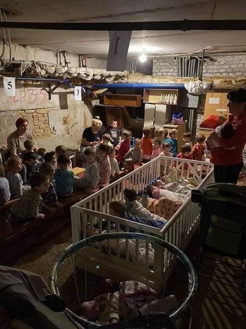
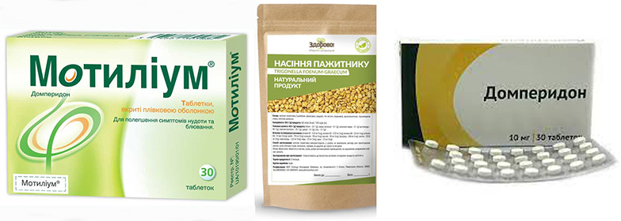

Релактація або повернення грудного вигодовування після перерви
фото звідси

Повернення грудного вигодовування після перерви - це реально! Релактація може врятувати життя Вашій дитині! Купити суміш, знайти безпечну воду, організувати правильне розведення суміші, температурний режим, стерилізацію в надвичайних умовах може бути неможливо, тому варто спробувати повернути грудне вигодовування.
Годування грудьми дитини жінкою, яка ніколи не народжувала, також реально. Це називається індукована лактація.
Чи реально повернути грудне вигодовування, якщо його завершили кілька місяців тому? Так, після перерви будь-якої тривалості.
Як саме це зробити?
Починаємо із регулярних сціджувань грудей (кожні 3 год). Наприклад 5 хв ліва грудь, 5 хв права, попили теплого, потім ще 2-3 такі підходи. При зціджуванні важливо зручно розташуватися і думати про успіх.
Вночі теж потрібно сціджувати, адже між 3 і 8 ранковими годинами виробляється гормон пролактин, який відповідає за кількість молока.
Можна сціджувати руками або молоковідсмоктувачем. Відео безпечної техніки зціджування руками є тут.
Підтримка оточуючих є безцінною і часто прискорює результат.
Перші дні НЕ орієнтуйтеся на те, скільки молока зціджується. Важливо - часто стимулювати груди. Перші крапельки можуть бути і за 5-7 днів.
Якщо зціджуєте руками, то можна дати малечі облизати грудь, або зібрати молоко шприцом без голки і дати дитині їсти з нього.

Для пришвидшення результату можна вживати:
✔️пажитник (фенугрек, хельба). Капсулу 500мг 7-12 шт на добу (розділити на кілька прийомів). Доза менше 3500 мг на добу може не діяти!
✔️домперидон (мотиліум, моторикс, мотинорм) по 2-3 таблетки 3 рази на добу. Це не є засіб для лактації, але в його інструкції є така побічна дія - збільшення кількості молока при лактації, яку ми і використовуємо. Варто застосовувати лише під наглядом консультанта з грудного вигодовування.
Можна обійтися при релактації і без медикаментів.
Якщо дитина не бере груди, старайтеся гніздуватися (більше інформації про гніздування є тут) і щоб було багато контакту шкіра до шкіри. Пропонуйте груди сонній малечі, навколо снів (одразу до сну і одразу після сну), крізь сон.
Дитина може спершу тулитися, потім почати облизувати груди, а тоді і присмокчеться. Якщо дитина взяла/бере груди, стараємося слідкувати за тим, щоб прикладання було правильним та ефективним (широко відкритий рот, щоб були ковтки).
Це працює! Перевірено.
Зціджене молоко неодмінно даємо дитині. Зі збільшенням кількості грудного молока поступово замінюємо ним суміш.
Через те, що будь-яка пляшка псує прикладання до грудей, а нам потрібно дитину повернути на груди, використовуємо при можливості альтернативні способи докорму(догодовування). Більше інформації у цій статті.
Також нагадаю, що грудне молоко будь-якої жінки за складом підходить іншій дитині більше, ніж будь-яка суміш. Тому в умовах надзвичайної ситуації вартує розгляду варіант донорського молока. За цим посиланням ви знайдете групу в Телеграм, де є мами, які готові бути донорами грудного молока.